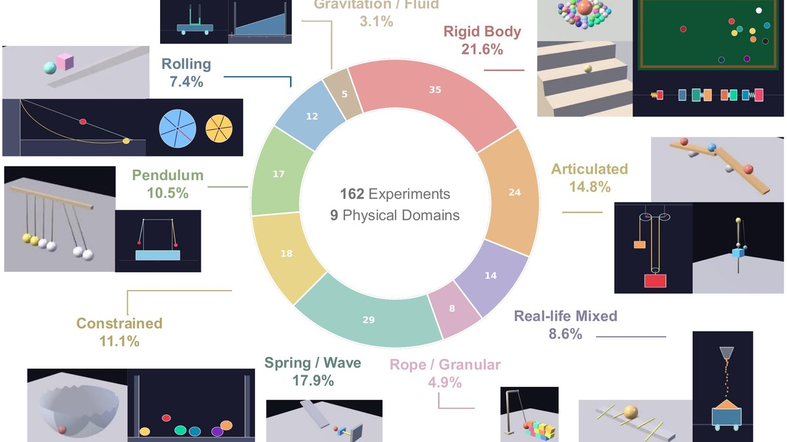
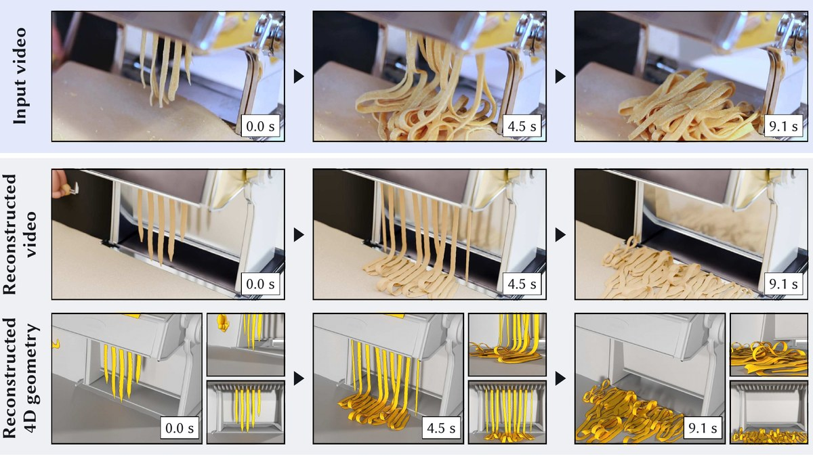
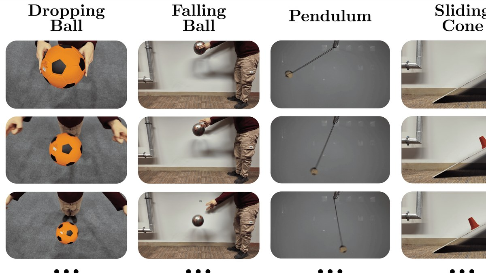
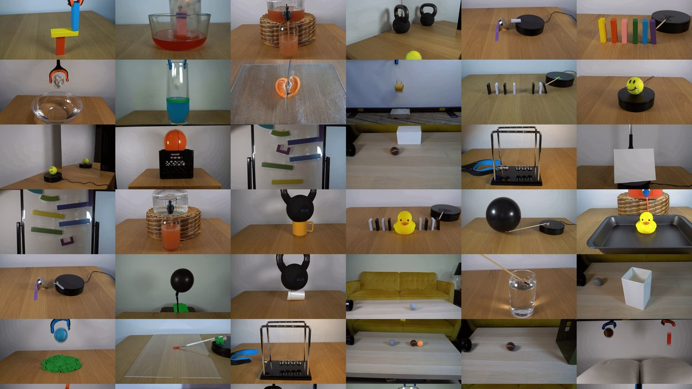

Blog
Our projects, and the benchmarks and methods of real-to-simulation, each in a short post.
Our work


Benchmarks
 SJTUBenchmarkPhysCodeGymCoding agents rebuild 156 videos as Blender programs, checked for physical validity.
SJTUBenchmarkPhysCodeGymCoding agents rebuild 156 videos as Blender programs, checked for physical validity.
CMUBenchmarkPhySimCodeFrom a video of a simulated phenomenon, a model states the physics and writes the code. Aether AIBenchmarkVideo2WorldA coding agent turns an embodied video into an interactive simulated world.
Aether AIBenchmarkVideo2WorldA coding agent turns an embodied video into an interactive simulated world.
Johns HopkinsBenchmark4DCodeBenchAn agent rebuilds a video of a dynamic scene as a 4D graphics program.
HBKUBenchmarkIRIS240 real 4K videos of eight dynamical systems, with measured parameters.
Google DeepMindBenchmarkPhysics-IQReal videos of 66 physical events: can a model predict what happens next?